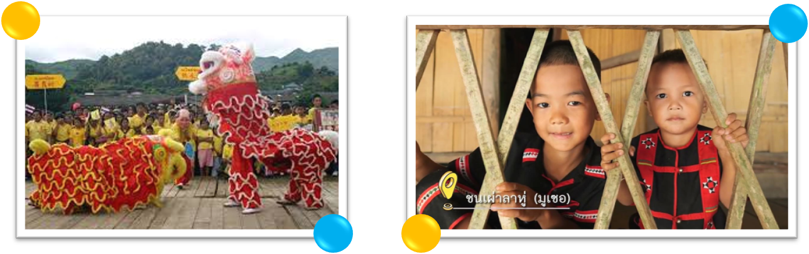
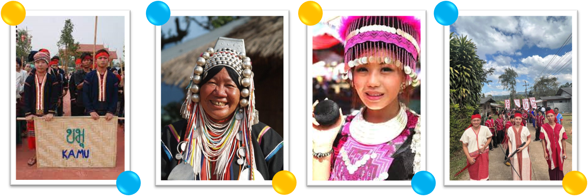

ชาติพันธ์เชียงราย
คำว่า "ชาติพันธุ์" และ "ชาติพันธุ์วิทยา" เป็นคำใหม่ในภาษาไทย การทำความเข้าใจเรื่องชาติพันธุ์ จำเป็นจะต้องพิจารณา เปรียบเทียบกับเรื่องเชื้อชาติ และสัญชาติ อาจเปรียบเทียบเชื้อชาติ สัญชาติ และชาติพันธุ์ได้ดังนี้ เชื้อชาติ (race) คือ ลักษณะทางชีวภาพของคน ซึ่งเห็นได้อย่างชัดเจนจากลักษณะรูปพรรณ สีผิว เส้นผม และตา การแบ่งกลุ่ม เชื้อชาติ (racial group) มักแบ่งออกเป็น ๓ กลุ่ม คือ นิกรอยด์ (Negroid) มองโกลอยด์ (Mongoloid) และคอเคซอยด์ (Caucasoid) ในตอนหลังได้เพิ่มออสตราลอยด์ (Australoid) โพลินีเชียน (Polynesian) ฯลฯ อีกด้วย การแบ่งแยกกลุ่มคนตามลักษณะทางชีวภาพนี้ มีความสำคัญในสังคมที่สมาชิกในสังคมมาจากบรรพบุรุษที่ต่างกัน และมีสีผิว และรูปพรรณสัณฐาน ที่ต่างกันอย่างเห็นได้ชัด เช่น ความแตกต่างระหว่างคนผิวขาวกับคนผิวดำ ในสังคมที่มีกลุ่มคนที่มีลักษณะทางชีวภาพต่างกันและประวัติความเป็นมาตลอดจน บทบาทในสังคมต่างกัน ความแตกต่างทางชีวภาพอาจเป็นปัจจัยที่ทำให้เกิดความไม่เท่าเทียมกันได้ แต่ในบางสังคม เช่น สังคมไทย ความแตกต่างทางชีวภาพไม่มีความหมายเท่าใดนัก
สัญชาติ (nationality) คือ การเป็นสมาชิกของประเทศใดประเทศหนึ่งตามกฎหมาย โดยที่ลักษณะทางชีวภาพและวัฒนธรรมอาจแตกต่างกันได้ การเป็นสมาชิกของประเทศย่อมหมายถึงการเป็นประชาชนของประเทศนั้น ผู้ที่อพยพมาจากที่อื่น เพื่อมาตั้งถิ่นฐานสามารถโอนสัญชาติมาได้ ผู้ที่เปลี่ยนสัญชาติ คือ ผู้ที่เปลี่ยนฐานะจากการเป็นประชาชนของประเทศหนึ่ง มาเป็นประชาชนของอีกประเทศหนึ่ง ชาติพันธุ์ (ethnicity หรือ ethnos) คือ การมีวัฒนธรรมขนบธรรมเนียมประเพณี ภาษาพูดเดียวกัน และเชื่อว่า สืบเชื้อสายมาจากบรรพบุรุษกลุ่มเดียวกัน เช่น ไทย พม่า กะเหรี่ยง จีนลาว เป็นต้น กลุ่มชาติพันธุ์หรือกลุ่มวัฒนธรรมมีลักษณะเด่นคือ เป็นกลุ่มคนที่สืบทอดมาจากบรรพบุรุษเดียวกัน บรรพบุรุษในที่นี้หมายถึงบรรพบุรุษทางสายเลือด ซึ่งมีลักษณะทางชีวภาพและรูปพรรณ (เชื้อชาติ) เหมือนกัน รวมทั้งบรรพบุรุษทางวัฒนธรรมด้วย ผู้ที่อยู่ในกลุ่มชาติพันธุ์เดียวกันจะมีความรู้สึกผูกพันทางสายเลือด และทางวัฒนธรรมพร้อมๆ กันไปเป็นความรู้สึกผูกพันที่ช่วยเสริมสร้างอัตลักษณ์ของบุคคลและของ ชาติพันธุ์ และในขณะเดียวกันก็สามารถเร้าอารมณ์ความรู้สึกให้เกิดความเป็นอันหนึ่งอัน เดียวกันได้โดยเฉพาะอย่างยิ่ง ถ้าผู้ที่อยู่ในกลุ่มชาติพันธุ์นับถือศาสนาเดียวกันความรู้สึกผูกพันนี้อาจ เรียกว่า "สำนึก" ทางชาติพันธุ์ หรือชาติลักษณ์ (ethnic identity) พจนานุกรมศัพท์สังคมวิทยาให้ความหมาย ชาติพันธุ์ (ethnos) ว่าหมายถึง "กลุ่มที่มีพันธะเกี่ยวข้องกัน และที่แสดงเอกลักษณ์ออกมา โดยการผูกพันลักษณาการของเชื้อชาติ และสัญชาติ เข้าด้วยกัน... ถ้าจะใช้ให้ถูกต้องจะมีความหมาย เฉพาะใช้กับกลุ่มที่มีพันธะทางเชื้อชาติและทาง วัฒนธรรม ประสานกันเข้าจนสมาชิกของกลุ่มเอง ไม่รู้สึกถึงพันธะของทั้งสองนี้ และคนภายนอก ที่ไม่มีความเชี่ยวชาญ จะไม่แลเห็นถึงความแตกต่างกัน" และพจนานุกรมศัพท์สังคมวิทยาให้ความหมาย ชาติพันธุ์วิทยา (ethnology) ว่า หมายถึง "การพินิจศึกษาเชิงวิทยาศาสตร์ ที่เกี่ยวกับวัฒนธรรมปัจจุบัน หรือวัฒนธรรมเดิม ที่สูญหายไปของกลุ่มมนุษยชาติทั้งหลายในโลก

ชาติพันธุ์วิทยาอาจหมายถึง มานุษยวิทยาวัฒนธรรมก็ได้" การมองว่ากลุ่มชาติพันธุ์คือ กลุ่มคนที่มีวัฒนธรรมร่วมกันนั้น อธิบายได้ว่า ในระยะแรกมนุษย์อยู่ร่วมกันเป็นกลุ่มเล็กๆ มีลักษณะคล้ายครอบครัวขนาดใหญ่ เมื่อคนกลุ่มเล็กอาศัยอยู่ด้วยกัน ก็สามารถเข้าใจกัน และประพฤติปฏิบัติต่อกันได้ โดยไม่มีความขัดแย้งเท่าใดนัก เมื่อ สังคมมีขนาดใหญ่ขึ้น มีคนหลายครอบครัวอาศัย อยู่ในบริเวณเดียวกัน การดำเนินวิถีชีวิตอาจ แตกต่างกันบ้าง ความคิดอาจไม่สอดคล้องกัน และปัญหาเรื่องความขัดแย้งก็คงจะตามมา ฉะนั้นเมื่อสังคมมีขนาดใหญ่ขึ้นก็จำเป็นต้องมี ระบบระเบียบมากขึ้นต้องมีการตกลงกันว่าอะไร ควรทำอะไรไม่ควรทำ ข้อตกลงเกี่ยวกับวิถีชีวิต การประพฤติปฏิบัติ และความคิดความเชื่อ จึงเกิดขึ้นในสังคมมนุษย์ และเรียกรวมๆ ว่า "วัฒนธรรม" กลุ่มคนที่มีวัฒนธรรมร่วมกันเรียกว่า เป็นคนชาติพันธุ์เดียวกัน วัฒนธรรม คือ ระบบสัญลักษณ์ ซึ่งสมาชิกของสังคมตกลงกันว่า จะใช้ร่วมกัน ผู้ที่มีกลุ่มชาติพันธุ์เดียวกันคือ คนที่อยู่ในสังคมเดียวกัน มีวัฒนธรรมร่วมกัน และสืบทอดมาจากบรรพบุรุษเดียวกัน การสืบทอดวัฒนธรรมจากคนรุ่นหนึ่งไปสู่อีกรุ่นหนึ่ง ในกระบวนการเรียนรู้ ที่พ่อแม่ อบรมสั่งสอนลูก ทำให้เกิดการสืบทอดชาติพันธุ์ ด้วยความสัมพันธ์ระหว่างชาติพันธุ์ วัฒนธรรม และสังคม จึงเป็นความสัมพันธ์ ที่แยกออกจากกันยาก และเนื่องจากการสืบทอดทางวัฒนธรรม และชาติพันธุ์ เป็นการสืบทอดทางชีวภาพ หรือทางสายเลือด ด้วยความแตกต่างระหว่าง ปัจจัยทางวัฒนธรรม และปัจจัยทางชีวภาพ จึงแยกออกจากกันยาก และทำให้คนทั่วไปไม่คำนึงถึงข้อ แตกต่างนี้ นอกจากนี้ เนื่องจากกลุ่มทางชีวภาพ หรือกลุ่มเชื้อชาติครอบคลุมหลายกลุ่มชาติพันธุ์ ความไม่ชัดเจนจึงอาจเกิดขึ้นได้ บางครั้งคนไทยใช้คำว่า เชื้อชาติ ในภาษาพูดทั่วๆ ไป ในความหมายของกลุ่มชาติพันธุ์ว่า คือ กลุ่มคนที่มีจุดกำเนิดของบรรพบุรุษร่วมกัน มีขนบธรรมเนียมประเพณีเดียวกัน และพูดภาษาเดียวกัน ตลอดจนมีความรู้สึกในเผ่าพันธุ์เดียวกัน ตัวอย่างของกลุ่มชาติพันธุ์กลุ่มต่างๆ คือ กลุ่มคนจีน กลุ่มคนไทย กลุ่มคนพม่า กลุ่มคนลาว กลุ่มคนเขมร กลุ่มคนกะเหรี่ยง กลุ่มคนอินเดีย กลุ่มคนม้ง ปัจจัยสำคัญ ในการจำแนกกลุ่มชาติพันธุ์คือ ความสำนึกของคนในกลุ่มนั้นว่า มีชาติพันธุ์ใด ปัจจัยทางด้านภาษาอย่างเดียว ไม่สามารถกำหนดชาติพันธุ์ได้ ขนบธรรมเนียม และวัฒนธรรมเป็นตัวกำหนดที่สำคัญกว่า ทั้งนี้ เพราะคนจีน หรือคนอินเดีย หรือคนกะเหรี่ยง มี จิตสำนึกในความเป็นคนจีน หรือความเป็นคน อินเดีย หรือความเป็นคนกะเหรี่ยง โดยคนทั้ง ๓ กลุ่มนี้ต่างรวมกันโดยเชื้อชาติ สัญชาติ และ ชาติพันธุ์ แล้วก็มีภาษาพูดหลายภาษา คนจีนที่พูดภาษาไหหลำ กวางตุ้ง และฮกเกี้ยน ต่างก็เรียกตัวเองว่า เป็นคนจีน คนอินเดียที่พูดภาษา ฮินดี เบงกาลี และทมิฬ ต่างก็เรียกตัวเองว่า เป็นคนอินเดีย และคนกะเหรี่ยงไม่ว่าจะเป็นเผ่า โปว์หรือเผ่าสะกอ ต่างก็เรียกตัวเองว่าเป็นคน กะเหรี่ยง ฉะนั้น การจำแนกกลุ่มชาติพันธุ์จึงขึ้น อยู่กับความสำนึกของตัวเองว่าเป็นคนกลุ่มใด นอกจากนี้ คนบางคนยังไม่อาจจะยึดในกลุ่มชาติพันธุ์กลุ่มใดกลุ่มหนึ่งได้ตลอดไป เมื่ออยู่ในสิ่งแวดล้อมหนึ่ง ก็มีความสำนึกอย่างหนึ่ง เมื่อสิ่งแวดล้อมเปลี่ยนไป ก็มีความสำนึกอีกอย่างหนึ่ง เช่น คนจีนที่เกิดในประเทศไทย และเรียน ที่โรงเรียนคนไทย เมื่ออยู่ในหมู่เพื่อนที่โรงเรียน ก็มักจะมองว่าตัวเองเป็นคนไทย แต่เมื่อกลับบ้าน ไปอยู่ในหมู่ญาติพี่น้อง ซึ่งพูดภาษาจีน ก็จะมองว่า ตัวเองเป็นคนจีน ชาวเขาเผ่าต่างๆ ในประเทศไทยก็เช่นเดียวกัน เขาอาจจะมองว่า ตัวเองเป็นชาวเขา หรือ "คนเมือง" (คนที่ตั้งบ้านเรือนอยู่ที่พื้นราบในภาคเหนือ) หรือคนไทยก็ได้ ขึ้นอยู่กับสภาพแวดล้อม คนเชื้อสายกุยใน ประเทศไทยอาจจะเป็นคนกุย คนอีสาน หรือ คนไทยก็ได้เช่นเดียวกัน การที่คนๆ เดียวมีความรู้สึกว่า เป็นสมาชิกของกลุ่มชาติพันธุ์หลายกลุ่มได้ ไม่ใช่เรื่องแปลกประหลาด และไม่ใช่เรื่องที่ผิดหรือถูก แต่เป็นการแสดงให้เห็นว่า ความสำนึกในเรื่องกลุ่มชาติพันธุ์เป็นสิ่งที่เปลี่ยนแปลงได้ และไม่ถาวร เมื่อคนกลุ่มใดกลุ่มหนึ่งมีความสำนึกในกลุ่มชาติพันธุ์อย่างชัดเจนไม่เปลี่ยนแปลง คนกลุ่มนั้นก็มักจะ เป็นคนที่มีอัตลักษณ์ทางวัฒนธรรม เชื้อชาติ ชาติพันธุ์ และสัญชาติ สอดคล้องกัน
